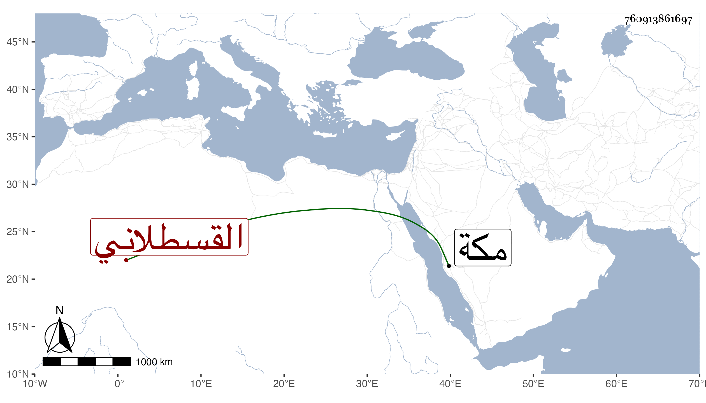

0902Sakhawi.DawLamic.ITO20230111-ara1.EIS1600.760913861697
Biography ID: 760913861697
أحمد بن عبد الله بن أحمد بن حسن بن الزين محمد بن الأمين محمد بن القطب القسطلاني ويعرف بالحرضي . ولد سنة ست وتسعين وسبعمائة ، وسمع من الزينين أبي بكر المراغي والطبري والشمس الشامي وابن الجزري والجمال بن ظهيرة وأجاز له في سنة مولده التنوخي وابن الذهبي وابن العلائي وخلق ، وتكسب بالشهادة وسجل على الحكام . مات سنة ست وعشرين بمكة . ذكره ابن فهد وغيره وكان حيا سنة اثنتين وأربعين .
